West Highland Way
Scotland's classic: Loch Lomond, Rannoch Moor, Ben Nevis.
154 km through Scotland, ending at Fort William. You begin at Milngavie. Watch Walks moves you along it with the steps you already take, so it's about 6 weeks at 5,000 steps a day. Here are its 14 landmarks, in the order you meet them, photographed and written up.
- 154km end to end
- 14landmarks
- 6 weeksat 5,000 steps a day
- Fort Williamfinishes at

The landmarks of West Highland Way
14 landmarks, in walking order. Each photograph is by the person credited beneath it, used as they licensed it.
-
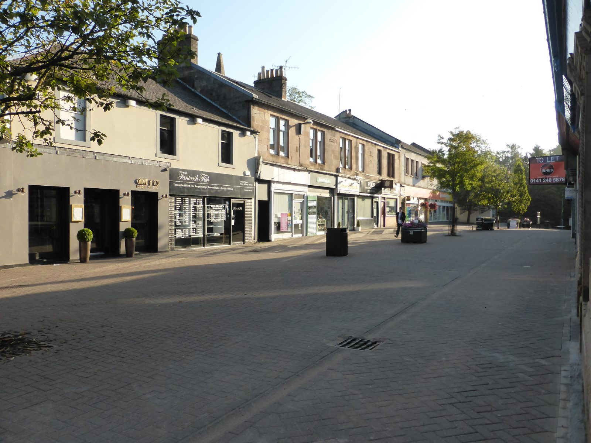
Photo: MartinThoma · Wikipedia, CC0 Milngavie
A granite obelisk in Milngavie's pedestrian precinct — the town's name said 'mull-guy' — marks where ninety-six miles begin. Within minutes the path drops into Mugdock woods, trading pavement for the banks of the Allander Water. Fort William and Ben Nevis lie far to the north, at the end of the long walk up the country.
-
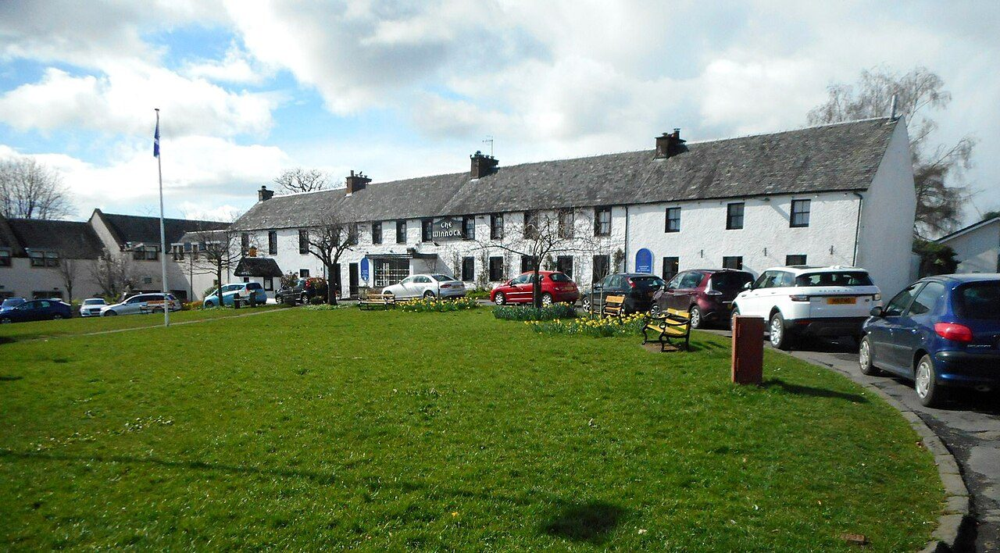
Photo: Richard Sutcliffe · Wikimedia Commons, CC BY-SA 2.0 Drymen
Nineteen kilometres of lowland fields and forestry track lead to Drymen, the last proper village before the hills take charge. It sits on the very edge of the Highlands, hens loose in cottage gardens. Somewhere past Garadhban Forest the ground begins to rise, and beyond it wait Conic Hill and the first sight of Loch Lomond.
-
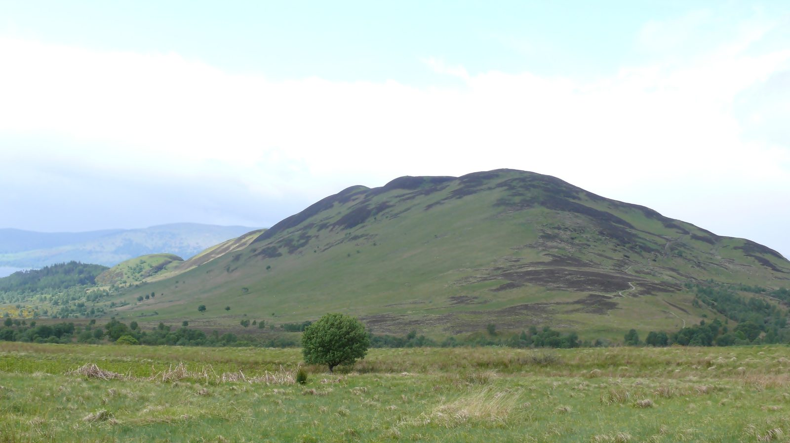
Photo: Ad Meskens · Wikipedia, CC BY-SA 3.0 Conic Hill
The path climbs a shoulder of Conic Hill, 361 metres, and the whole of Loch Lomond unrolls below with its scatter of wooded islands. The hill sits astride the Highland Boundary Fault — Lowlands to the south, Highlands to the north, split by a line of rock laid down long before any of it had a name. A steep path drops from here to Balmaha.
-
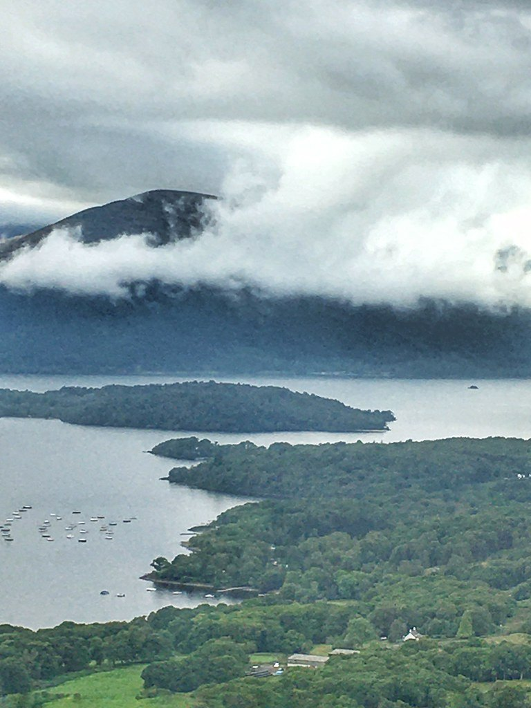
Photo: cattan2011 · Flickr via Openverse, CC BY 2.0 Balmaha
Down on the shore, Balmaha curls round a quiet bay where dinghies knock at their moorings. Inchcailloch, the old burial isle, floats just offshore, oak-covered and still. This is the east bank of Loch Lomond, Britain's largest lake by surface area, and the Way traces its edge for a full day north from here.
-
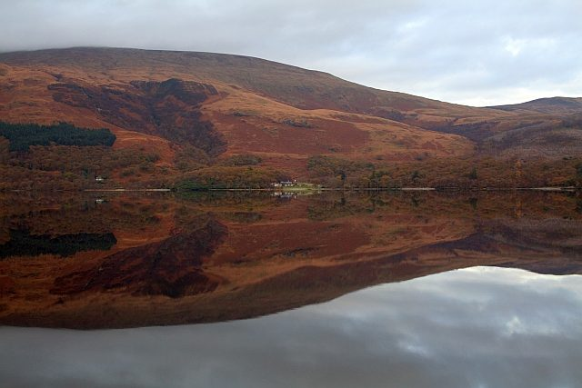
Photo: Steve Partridge · Wikipedia, CC BY-SA 2.0 Rowardennan
Ben Lomond fills the sky above Rowardennan, 974 metres and the most southerly Munro in Scotland. The track has hugged the loch through oakwood all morning, roots and shingle underfoot. Some walkers peel off here to climb the summit; the main path holds to the shore. Beyond this point the way turns rougher, and the wild side of Loch Lomond begins in earnest.
-
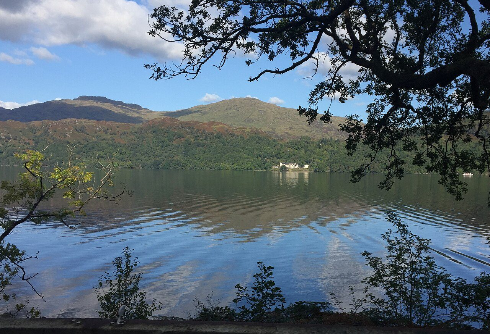
Photo: Eirian Evans · Wikimedia Commons, CC BY-SA 2.0 Inversnaid
Arklet Falls crashes under the footbridge at Inversnaid, white water folding into Loch Lomond. This is Rob Roy MacGregor's country — the outlaw's cave lies hidden among the crags a short way north. A single hotel stands on the otherwise empty shore. Ahead comes the roughest stretch of the whole Way, a scramble over slick roots and boulders that slows every mile.
-
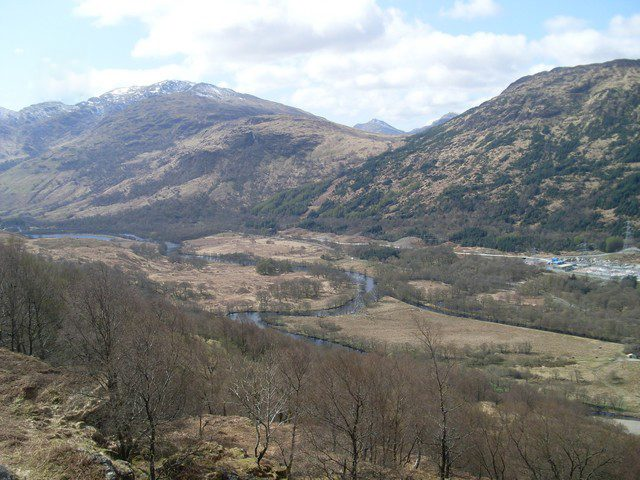
Photo: Stephen Sweeney · Wikimedia Commons, CC BY-SA 2.0 Inverarnan
Loch Lomond finally ends, and the glen of the River Falloch opens at Inverarnan. The Drovers Inn has poured drams here since 1705, its hallway crowded with stuffed beasts and beams black with age. Cattle once rested on these flats, driven south to Lowland markets. With the loch behind for good, the going eases into Glen Falloch.
-
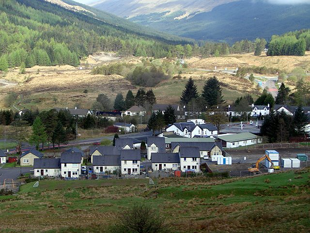
Photo: John Lucas · Wikimedia Commons, CC BY-SA 2.0 Tyndrum
Tyndrum announces itself with a railway platform and the smell of fried food, welcome after the long haul up Glen Falloch. Lead was mined in these hills for a century and more, and gold still hides in the burns above the village. Two separate railway lines pass through — no smaller place in Britain keeps two stations. Open ground and a long gap in shelter lie ahead.
-
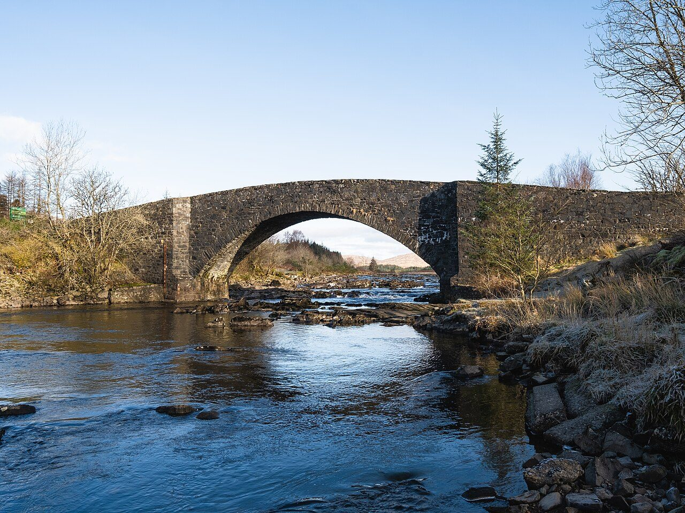
Photo: Christian David · Wikimedia Commons, CC BY-SA 4.0 Bridge of Orchy
A handsome stone bridge arches the River Orchy here, thrown up in 1751 as part of the military roads that tamed the Highlands after the risings. A handful of trains a day call at the lonely platform above the village. Past the bridge the path climbs through pine to Inveroran, then out onto open moor, with civilisation thinning at every mile.
-
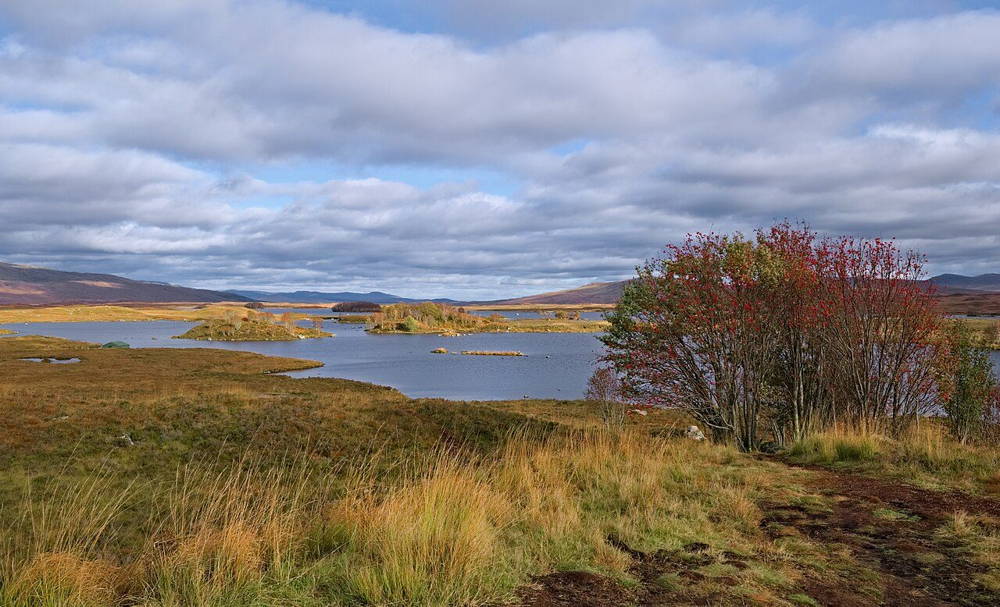
Photo: Daniel Kraft · Wikimedia Commons, CC BY-SA 3.0 Rannoch Moor
Bog, lochans and heather stretch in every direction across Rannoch Moor, some fifty square miles of near-treeless wilderness and one of Britain's last great emptinesses. The old drove road runs almost dead straight across it, raised on stone above the peat. There is no shelter out here and no quick way off, and weather rolls in from the west unhindered.
-
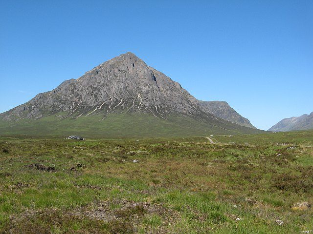
Photo: Richard Webb · Wikimedia Commons, CC BY-SA 2.0 Kingshouse
The King's House stands alone at the mouth of Glen Coe, one of Scotland's oldest licensed inns, taking in travellers for well over two centuries. At dusk red deer graze right up to its walls, unafraid. Across the road the dark pyramid of Buachaille Etive Mòr rears up, 1,022 metres of rock, where the Way climbs its steepest ground the next day.
-
Devil's Staircase
The zigzags climb to 548 metres — the highest point of the West Highland Way, and the ascent that earned the Devil's Staircase its name. Soldiers cut this road by hand around 1750; they cursed it, and the name stuck fast. At the top the Mamores crowd the north and Kinlochleven lies far below, with everything beyond running downhill to Loch Leven.
-
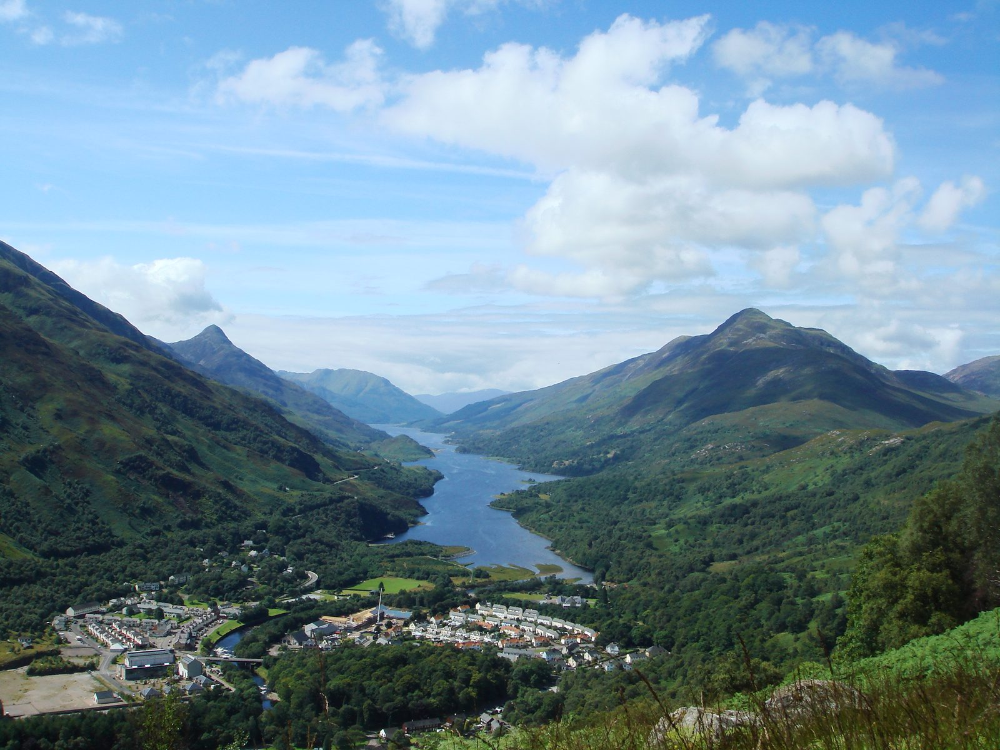
Photo: Rmaclean3 · Wikipedia, Public domain Kinlochleven
The long descent falls some five hundred metres to Kinlochleven, at the head of sea-loch Leven. An aluminium smelter once ran the town on power piped from the Blackwater dam above — when the scheme was completed in 1909, this became the first village in the world with every house wired for electricity. Twenty-four kilometres of glen and forest remain to Fort William.
-
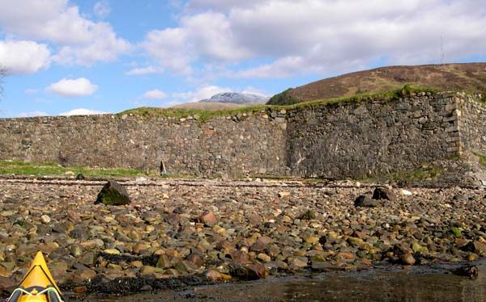
Photo: Nick R · Wikimedia Commons, CC BY-SA 2.0 Fort William
A bronze walker sits rubbing his sore feet at the end of the High Street — the finish at Fort William, ninety-six miles from Milngavie. Ben Nevis looms behind the town, 1,345 metres, the highest ground in all Britain. From a Lowland obelisk to the foot of the highest hill in the land, the West Highland Way runs the length of the Highlands and ends here.
Walking the West Highland Way
Your watch is already counting these steps. Watch Walks spends them on the West Highland Way, all 154 km of it, and hands you each landmark as you reach it. There's no route recording, no account and no ads. The Inca Trail is free; this one is a one-time purchase with no subscription.
Other trails in Europe
- Camino de Santiago 780 km · Spain
- Length of Britain 1,745 km · United Kingdom
- GR20 180 km · Corsica (France)
- Tour du Mont Blanc 170 km · France/Italy/Switzerland
- Walker's Haute Route 180 km · France / Switzerland
- Kungsleden (The King's Trail) 440 km · Sweden